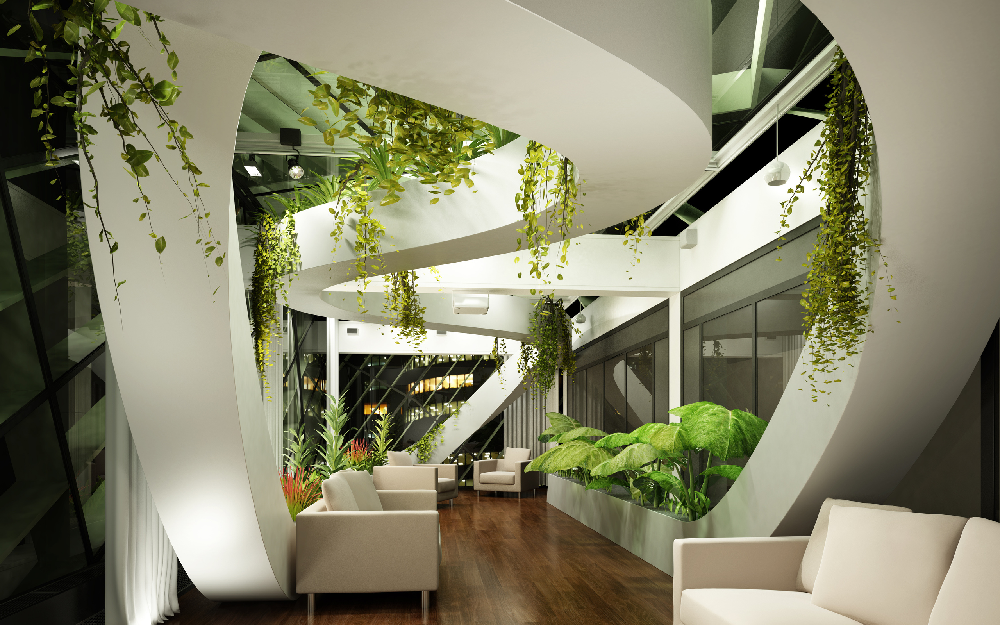

Кратко о Дизайне
Дизайн (от англ. design — проектировать, чертить, задумать, а также проект, план, рисунок) — деятельность по проектированию эстетических свойств промышленных изделий («художественное конструирование»), а также результат этой деятельности (например, в таких словосочетаниях, как «дизайн автомобиля»).

Считается, что в более широком смысле дизайн не только призван к художественному конструированию, но и должен участвовать в решении более широких социально-технических проблем функционирования производства, потребления, существования людей в предметной среде, путём рационального построения её визуальных и функциональных свойств.
Виды дизайна Дизайн — это очень объемное понятие, которое включает огромное количество разнообразных процессов деятельности, направленных на создание того или иного продукта. В зависимости от сферы применения (назначения) различают следующие виды дизайна:
- Архитектурный. Включает детальную разработку проекта будущего здания или сооружения с учетом действующих строительных нормативов.
- Интерьерный. Направлен на создание комфортной и эстетически привлекательной среды проживания людей в помещениях.
- Транспортный. Используется для проектирования комфортабельных и надежных транспортных средств (автомобилей, самолетов, поездов, кораблей).
- Игровой. Предназначен для разработки уникального геймплея (набора доступных игрокам вариантов действий в разных ситуациях, условий победы и проигрыша, уровней сложности).
- Книжный. Определяет все нюансы художественного оформления, типографского набора и редактирования текста.
- Ландшафтный. Включает комплекс мероприятий, направленных на благоустройство территории с учетом архитектурных, биологических и культурных аспектов.
- Дизайн мебели. Объединяет все виды деятельности по разработке предметов мебели для жилых, коммерческих, производственных помещений.
- Дизайн одежды, обуви и аксессуаров. Испытывает сильное влияние модных тенденций и культурных традиций, удовлетворяет важную потребность человека выглядеть красиво и стильно.
- Дизайн городской среды. Разрабатывается с целью создания комфортной среды обитания жителей крупных населенных пунктов, простоты и безопасности их перемещения по улицам и площадям.
- Арт-дизайн. Неразрывно связан с интерьером и мебелью, помогает гармонично вписать в окружающую обстановку предметы искусства.
- Футуродизайн. Используется для разработки смелых новаторских проектов, которые можно будет внедрить в производство в будущем.
- Звуковой. Включает процесс создания оригинальных звукошумовых эффектов, востребован в кинопроизводстве, на телевидении, в шоу-бизнесе и при создании компьютерных игр.
- Световой. Применяется для внедрения креативных идей в сфере красочного светового оформления праздников, фестивалей и авторских художественных инсталляций.
- Веб-дизайн. Направлен на создание удобных для пользователя интерфейсов сайтов и онлайн-приложений.
Википедия
Посетите нашу вторую страницу сайта